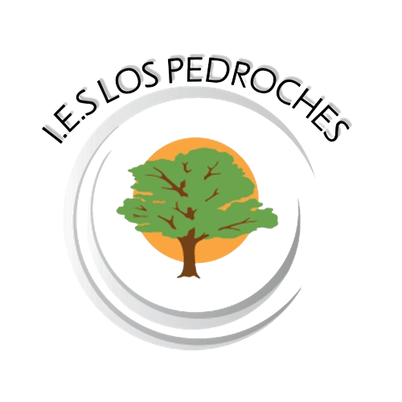

Estudios realizados

Máster en Ingeniería Web
Universidad de Oviedo [ 09/2022 - Actual ]
Población: Escuela de Ingeniería Informática, 33007, Oviedo, Asturias
País: España
Sitio web: https://miw.uniovi.es/
Grado en Ingeniería de la Salud (Bioinformática)
Universidad de Málaga [ 09/2018 - 07/2022 ]
Población: Escuela Técnica Superior de Ingeniería Informática, 29071, Málaga
País: España
Sitio web: https://www.uma.es/etsi-informatica/

Bachillerato de Ciencias de la Salud
IES Los Pedroches [ 09/2016 - 06/2018 ]
Población: Av. de la Salchi, 14400 Pozoblanco, Córdoba
País: España
Sitio web: https://ieslospedroches.com/
Cursos realizados
Curso en Ciencia de Datos y Aprendizaje Computacional en Python
Universidad de Málaga [ 02/2022 - 03/2022 ]
Población: Escuela Técnica Superior de Ingeniería Informática, 29071, Málaga
País: España
Sitio web: https://www.uma.es/etsi-informatica/
Curso en Pentesting con Kali
Universidad de Málaga [ 05/2022 - 06/2022 ]
Población: Escuela Técnica Superior de Ingeniería Informática, 29071, Málaga
País: España
Sitio web: https://www.uma.es/etsi-informatica/